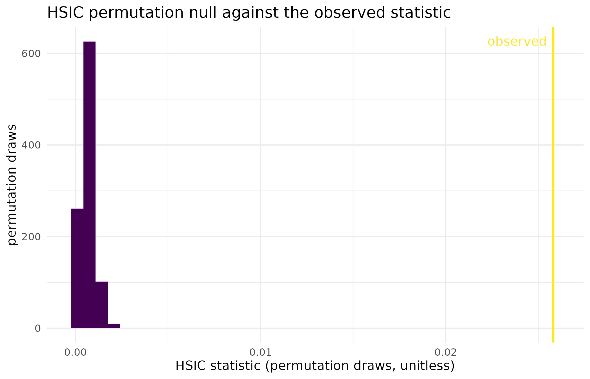

Why
An analyst has two samples and two variables, and the question that matters is not about means. My control and treated yields have the same average, so the t-test says nothing happened – but the two histograms do not look alike. And this soil covariate has a Pearson correlation of roughly zero with yield, which I do not believe for a moment. What is the smallest thing I can write that tests the distributions themselves, and tests dependence without assuming it is linear? This vignette answers both halves on two synthetic toys, and shows what the answer looks like when it comes back.
What
Four objects and verbs carry this vignette.
kernel_spec() declares the kernel – the similarity function
that turns raw observations into a Gram matrix – with a family
("rbf", "matern", "linear",
"polynomial") and a bandwidth, which is resolved from the
data by the median heuristic unless a number is given.
kernel_matrix() evaluates that specification on a data
matrix and returns the Gram matrix itself, which is the only object the
tests below ever see of the raw data.
mmd_test() is the two-sample test: it compares the
kernel mean embeddings of two samples through the Maximum Mean
Discrepancy, so it sees any difference the kernel can represent, not
just a shift in location. hsic_test() is the independence
test: it computes the Hilbert-Schmidt Independence Criterion between two
variables, which is zero if and only if they are independent under a
characteristic kernel, so it detects curved dependence that a
correlation coefficient reports as nothing. Both return a
kernel_test_result carrying the observed statistic, the
permutation null it was scored against, and the p-value that follows,
and both take a seed so the permutation draw is
reproducible.
Do
The kernel specification
k_default <- kernel_spec()
k_default
#> Kernel specification:
#> Type: rbf
#> Bandwidth: median heuristic
k_fixed <- kernel_spec("rbf", bandwidth = 1.5)
k_fixed
#> Kernel specification:
#> Type: rbf
#> Bandwidth: 1.5
k_linear <- kernel_spec("linear")
k_linear
#> Kernel specification:
#> Type: linearThe Gram matrix
A synthetic toy: 100 draws from a standard bivariate normal, used only to show the shape of the object the tests consume.
Two samples, same distribution
Two synthetic samples of 100 points each, both standard bivariate normal.
Two samples, one shifted
The same comparison with the second sample’s mean moved by 0.5 in both coordinates.
Dependence a correlation cannot see
A synthetic toy in which the outcome is the square of the covariate plus noise: the dependence is exact, and the linear correlation is close to zero because the relationship is symmetric about the origin.
set.seed(456L)
n_hsic <- 300L
x_q <- rnorm(n_hsic)
y_q <- x_q^2 + rnorm(n_hsic, sd = 0.3)
pearson_r <- cor(x_q, y_q)
round(pearson_r, 3L)
#> [1] 0.022
hsic_quad <- hsic_test(x_q, y_q, n_permutations = 999L, seed = 1L)
hsic_quad
#>
#> HSIC Test
#>
#> Statistic: 0.0258008
#> P-value: 0.0010
#> N: 300
#> Perms: 999
#> Kernel X: rbf (bw = 0.9644)
#> Kernel Y: rbf (bw = 0.8461)The figure: where the observed statistic sits
null_df <- data.frame(statistic = hsic_quad$null_distribution)
ggplot2::ggplot(null_df, ggplot2::aes(x = statistic)) +
ggplot2::geom_histogram(bins = 40L, fill = "#440154", colour = NA) +
ggplot2::geom_vline(
xintercept = hsic_quad$statistic, colour = "#FDE725", linewidth = 1
) +
ggplot2::annotate(
"text", x = hsic_quad$statistic, y = Inf, hjust = 1.1, vjust = 2,
label = "observed", colour = "#FDE725"
) +
ggplot2::labs(
x = "HSIC statistic (permutation draws, unitless)",
y = "permutation draws",
title = "HSIC permutation null against the observed statistic"
) +
ggplot2::theme_minimal()
Permutation null distribution of the HSIC statistic on the quadratic toy (999 label permutations), with the observed statistic marked. The observed value sits far outside the range the null ever reaches, which is what a p-value at the permutation floor means.
The three verdicts side by side
| Question | Test | Statistic | p-value |
|---|---|---|---|
| Two samples, same distribution | mmd_test() | -0.0041 | 0.757 |
| Two samples, mean shifted by 0.5 | mmd_test() | 0.0661 | 0.001 |
| Quadratic dependence, correlation near zero | hsic_test() | 0.0258 | 0.001 |
Read
The two samples drawn from the same distribution give an MMD
statistic of -0.00414 and a p-value of 0.757: the observed discrepancy
is an ordinary member of its own permutation null, so there is no
evidence the two samples differ. Shifting the second sample’s mean by
0.5 raises the statistic to 0.0661 and drops the p-value to 0.001, the
smallest value 999 permutations can express (1 / (B + 1) =
0.001), so the test has separated the two samples as decisively as this
permutation budget allows.
The quadratic toy is where the kernel earns its keep. The Pearson correlation between covariate and outcome is 0.022, near enough to zero that a linear screen would discard the covariate. HSIC returns 0.0258 against a null whose largest of 999 draws is only 0.00228, giving a p-value of 0.001: the dependence is real, strong, and invisible to correlation. The figure shows the separation directly – the whole null sits in a narrow band near zero and the observed statistic is nowhere near it.
Limits
Both toys here are synthetic and generously sized for the effects
they carry, so they show that the tests work rather than how they behave
at the margin. A permutation p-value cannot go below
1 / (n_permutations + 1), so a small p-value in this
vignette reports the budget as much as the evidence; raise
n_permutations before reading a small p-value as a
magnitude. Neither test here adjusts for anything:
mmd_test() and hsic_test() answer questions
about association and distributional difference, and an association is
not a causal effect whenever a common cause is in play. The tests that
do adjust are the subject of the next two vignettes. Finally, both tests
inherit the kernel’s blind spots: a linear kernel cannot see the
quadratic dependence above, and the median-heuristic bandwidth is a
default, not a tuned choice.
What to read next
Does the treatment cause the outcome, or do they share a cause? adds backdoor adjustment, so the association measured here becomes a causal one. A treatment that changes the spread and not the mean runs the doubly robust distributional tests for treatment effects that a mean-based method cannot see. When plots sit inside farms handles the clustered designs in which the permutation null used above is no longer valid.
Reproduce
Seeds 42 (Gram matrix toy), 123 (two-sample
toys) and 456 (quadratic toy) for data generation, and
seed = 1L passed to every test so the permutation draws are
fixed. Package versions follow.
sessionInfo()
#> R version 4.6.1 (2026-06-24)
#> Platform: x86_64-pc-linux-gnu
#> Running under: Ubuntu 24.04.5 LTS
#>
#> Matrix products: default
#> BLAS: /usr/lib/x86_64-linux-gnu/openblas-pthread/libblas.so.3
#> LAPACK: /usr/lib/x86_64-linux-gnu/openblas-pthread/libopenblasp-r0.3.26.so; LAPACK version 3.12.0
#>
#> locale:
#> [1] LC_CTYPE=C.UTF-8 LC_NUMERIC=C LC_TIME=C.UTF-8
#> [4] LC_COLLATE=C.UTF-8 LC_MONETARY=C.UTF-8 LC_MESSAGES=C.UTF-8
#> [7] LC_PAPER=C.UTF-8 LC_NAME=C LC_ADDRESS=C
#> [10] LC_TELEPHONE=C LC_MEASUREMENT=C.UTF-8 LC_IDENTIFICATION=C
#>
#> time zone: UTC
#> tzcode source: system (glibc)
#>
#> attached base packages:
#> [1] stats graphics grDevices utils datasets methods base
#>
#> other attached packages:
#> [1] kernR_0.8.2
#>
#> loaded via a namespace (and not attached):
#> [1] vctrs_0.7.3 cli_3.6.6 knitr_1.52
#> [4] rlang_1.3.0 xfun_0.61 otel_0.2.0
#> [7] generics_0.1.4 S7_0.2.2 textshaping_1.0.5
#> [10] data.table_1.18.6.1 jsonlite_2.0.0 labeling_0.4.3
#> [13] glue_1.8.1 htmltools_0.5.9 PESTO_0.10.1
#> [16] ragg_1.5.2 sass_0.4.10 scales_1.4.0
#> [19] rmarkdown_2.32 grid_4.6.1 evaluate_1.0.5
#> [22] jquerylib_0.1.4 fastmap_1.2.0 yaml_2.3.12
#> [25] lifecycle_1.0.5 compiler_4.6.1 RColorBrewer_1.1-3
#> [28] fs_2.1.0 Rcpp_1.1.2 farver_2.1.2
#> [31] systemfonts_1.3.2 digest_0.6.39 R6_2.6.1
#> [34] bslib_0.12.0 withr_3.0.3 tools_4.6.1
#> [37] gtable_0.3.6 pkgdown_2.2.1 ggplot2_4.0.3
#> [40] cachem_1.1.0 desc_1.4.3